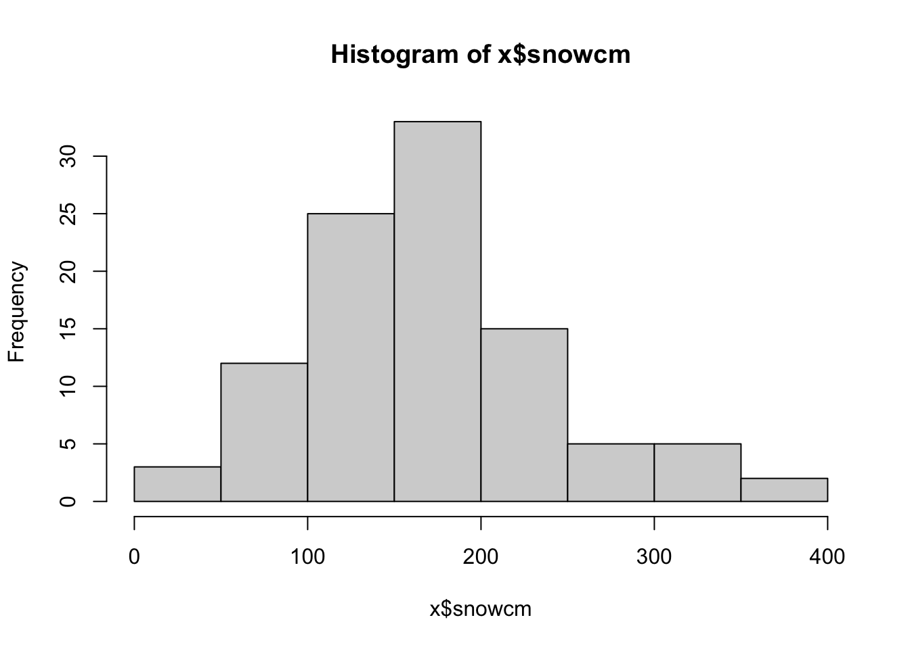
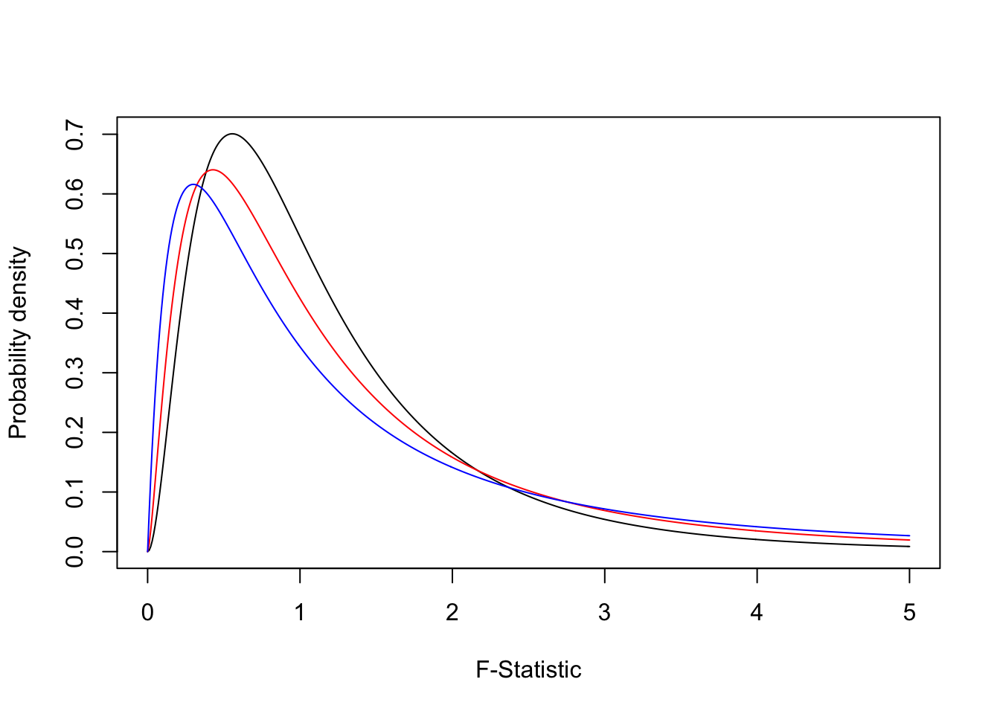

Week 7 ANOVA
This week we introduce the analysis of variance method for comparing multiple group means.
7.1 What we cover this week
- Hypothesis testing for more than two means
7.3 Lab
This lab is due on the Dropbox on MyLearningSpace on Friday March 19th
Someone suggested in lecture we analyze snowfall data, so let’s do it. There are many places to pull weather/climate data online, most of which draw their source data from Environment Canada weather station network. There is an r package to pull data directly into r from the Environment Canada API, but we will use another site weatherstats.ca which has a nice dasboard interface onto the EC data. However if we want to do some statistical analysis ourselves we need to bring this data intor.
We will compare snowfall in three Ontario cities, Hamilton, Toronto, and Ottawa. I have done the heavy lifting in taking data from https://ottawa.weatherstats.ca/, https://toronto.weatherstats.ca/, and https://hamilton.weatherstats.ca/ and formatted it into a nice data.frame object which you can read in as follows:
x <- read.csv("https://www.dropbox.com/s/ze5saukvq1tjzbs/snow.csv?dl=1")Now let’s take a look at this dataset:
names(x) #check out the column names to see what variables we have## [1] "Year" "Snow" "City"head(x) #check out first few rows## Year Snow City
## 1 1996 122.4 cm Toronto
## 2 1997 143.6 cm Toronto
## 3 1998 61.5 cm Toronto
## 4 1999 117.8 cm Toronto
## 5 2000 135.7 cm Toronto
## 6 2001 81.6 cm Torontotail(x) #check out last few rows## Year Snow City
## 95 2015 176.8 cm Ottawa
## 96 2016 312.9 cm Ottawa
## 97 2017 258.4 cm Ottawa
## 98 2018 247.4 cm Ottawa
## 99 2019 269.7 cm Ottawa
## 100 2020 190.6 cm Ottawanrow(x) #see total number of rows in the dataset## [1] 100Well we can see that there are 100 rows, where each row corresponds to year annual total snowfall in a particular city. Let’s checkout what cities/years of data are here:
unique(x$City)## [1] "Toronto" "Hamilton" "Montreal" "Ottawa"summary(x$Year)## Min. 1st Qu. Median Mean 3rd Qu. Max.
## 1996 2002 2008 2008 2014 2020So we have four cities, and data ranging from 1996 to 2020. Our variable of interest here is snowfall, which is recorded in centimeters. Unfortunately, we have the units ‘cm’ stored as data - something which happens a lot but can make analysis more complicated. As it stands now, r has no way of knowing that the values in the Snow column are numeric, so the values also has text. We can verify this by checking the class of the column
class(x$Snow)## [1] "character"which means it is character (i.e., text). We need to just pull out the numeric part of the values in the Snow column so that we can analyze them statistically. If you try to do analysis of the data now you will get an error:
mean(x$Snow)## [1] NAso we look at the values and look for a pattern for what exactly we want:
head(x$Snow, 10)## [1] " 122.4 cm " " 143.6 cm " " 61.5 cm " " 117.8 cm " " 135.7 cm "
## [6] " 81.6 cm " " 114.9 cm " " 129.6 cm " " 134.9 cm " " 162.6 cm "there are a few of things to take notice of. The numbers part of the values in x$Snow are surrounded by blank spaces. Also, there is an empty space after the “cm” part. What we need to do is a little string parsing - much of learning r or any other technical skill often boils down to knowing what to Google. The best library for doing this kind of thing in r is called stringr - which you will have to install with install.packages('stringr') before you can load it.
Let’s formulate a set of rules for exactly how we want to pull out the numeric part of the values in the x$Snow data.
- get rid of trailing spaces
- pull out everything up to the first space
- convert output of 2 to a numeric variable
This is really easy to do in r but would be tedious and annoying to do by hand. We will wrap our examples in the head function so we just see the first few rows of output
library(stringr)
head(str_trim(x$Snow)) #get rid of trailing spaces using str_trim## [1] "122.4 cm" "143.6 cm" "61.5 cm" "117.8 cm" "135.7 cm" "81.6 cm"#now a little stringr magic:
x$snowcm <- str_trim(str_sub(str_trim(x$Snow), start = 1, end = str_locate(str_trim(x$Snow), " ")[,1]))
class(x$snowcm)## [1] "character"which shows we’re almost there, we just have to convert it to numeric in r which we can do now with as.numeric as follows:
x$snowcm <- as.numeric(x$snowcm)
summary(x$snowcm)## Min. 1st Qu. Median Mean 3rd Qu. Max.
## 32.4 122.4 166.3 171.9 203.5 374.1hist(x$snowcm)
OK so we now have total snowfall by city by year, which we can use to do our analysis.
7.3.1 Analysis of Variance in R
We have just looked at doing a hypothesis test for a difference between two means. But what if we want to test for differences across three means? Or five? This is very common – when you have a categorical demographic variable, and you want to compare a numeric variable across the categories.
We can set up a hypothesis test for multiple groups by comparing the variation between and within groups of data. This approach is called Analysis Of Variance (ANOVA). For ANOVA, we use a test statistic that is a ratio of sums of squares, and it follows an F distribution and is therefore called an F statistic.
The F statistic can be calculated for ANOVA as:
\(F=\frac{MSB}{MSE}\)
Where MSB is the mean squares between groups, and MSE is the mean squares within groups. Refer to lecture notes for full description of these terms.
7.3.1.1 Mean Squares Between (MSB)
We will focus now on the MSB part in the equation above. This is the ‘mean squares between’ - which quantifies the amount of ‘between group differences’. If this is high the F goes above 1 and we have evidence of between group differences in means. As noted in lecture, the MSB is
\(MSB = \frac{BSS}{k-1}\)
where BSS is between group sums of squares and k is the number of groups being compared.
\(BSS = \sum{n_i}(\bar{x_i}-\bar{\bar{x}})^2\)
where \(\bar{x}_i\) is the mean from the ‘i’th’ group, and \(\bar{\bar{x}}\) is the grand mean. Let’s think about how to calculate these pieces. The \(\bar{x}_i\) are easy enough they are the sample means. Let’s examine on the golf club data below (use ANOVA lecture slides to compare):
c1 <- c(254,263,241,237,251) #sample data 1
c2 <- c(234,218,235,227,216) #sample data 2
c3 <- c(200,222,197,206,204) #sample data 3
xb1 <- mean(c1) #sample mean 1
xb2 <- mean(c2) #sample mean 2
xb3 <- mean(c3) #sample mean 3
gm <- mean(c(xb1, xb2, xb3)) #grand meanTherefore BSS becomes:
BSS <- 5 * (xb1-gm)^2 + 5 * (xb2-gm)^2 + 5 * (xb3-gm)^2
BSS## [1] 4716.47.3.1.2 Mean Squares Error (MSE)
And ESS is the within-group sum of squares (or error sum of squares) which is
\(ESS = \sum_{i=1}^k{}\sum_{j=1}^n{(x_{ij}-\bar{x_j})^2}\)
or
ESS <- sum((c1-xb1)^2) + sum((c2-xb2)^2) + sum((c3-xb3)^2)
ESS## [1] 1119.6therefore:
MSB <- BSS/2
MSE <- ESS/12
Fstat <- MSB/MSE
Fstat## [1] 25.27546then get the appropriate F-crit
qf(.05, df1=2, df2=12, lower.tail = FALSE)## [1] 3.885294and make our conclusion.
For any model, we do get the F statistic hypothesis test as the last line in the output. The hypothesis being tested is that the F is equal to 1, the alternate is that it is not equal to one. The F distribution is used to characterize the f statistic (surprise). Because this is a ratio of positive numbers (both are sums of squares), the F takes on only positive numbers. The shape of the F statistic is as below.
fdata3 <- df(seq(0,5,.01), df1=4, df2=3)
fdata2 <- df(seq(0,5,.01), df1=5, df2=5)
fdata1 <- df(seq(0,5,.01), df1=6, df2=10)
plot(seq(0,5,.01), fdata1, type="l", ylab = "Probability density", xlab="F-Statistic")
lines(seq(0,5,.01), fdata2, type="l", col="red")
lines(seq(0,5,.01), fdata3, type="l", col="blue")
These are just some examples of possible f distributions. As with any hypothesis test, we compare the observed value of an F statistic to a critical value from the distribution, for a given alpha (significance level). Or we just compare the p-value to our alpha.
Key things to note about the F distribution, we now have two degrees of freedom, one for the numerator and one for the denominator. In the end you don’t have to know too much detail about it because the way we use it is the same as the normal and t distributions, we compute a value of the test statistic for our data and compare it a sampling distribution associated with the null hypothesis. We then make a conclusion about our hypothesis based on this comparison (i.e., reject or fail to reject).
Finally, if our data are formatted as a table, we can use the built in anova function to compare means
ranges <- c(c1, c2, c3)
clubs <- c(rep("C1", 5), rep("C2", 5), rep("C3", 5))
df <- data.frame(ranges, clubs)
anova(lm(ranges~clubs, data=df))## Analysis of Variance Table
##
## Response: ranges
## Df Sum Sq Mean Sq F value Pr(>F)
## clubs 2 4716.4 2358.2 25.276 4.985e-05 ***
## Residuals 12 1119.6 93.3
## ---
## Signif. codes: 0 '***' 0.001 '**' 0.01 '*' 0.05 '.' 0.1 ' ' 17.3.2 Lab Assignment
Use ANOVA to compare whether snowfall differs among the four cities in the dataset. State your hypothesis, test statistics, p-value and a sentence interpreting your result. Can use built in function or manual method - either are OK. (out of 5)
Use ANOVA to compare whether snowfall differs among (any) three of the four cities in the dataset. State your hypothesis, test statistics, p-value and a sentence interpreting your result. Can use built in function or manual method - either are OK. (out of 5)
Conduct some analysis of your choosing on the snow dataset to explore a question you find interesting. You can incorporate external data if you want. You can use any approach you want including but not limited to hypothesis testing, graphs, confidence intervals etc. Write up a paragraph interepreting your analysis - discuss any limitations (out of 10)
One of the foundational assumptions of classical statistical inference is that observations are indepenent. Can you think of any potential violations to this assumption with the snow dataset? (out of 5)
Bonus question: Explain in detail (i.e., what each function is doing) what is happening in this step below
#now a little stringr magic:
x$snowcm <- str_trim(str_sub(str_trim(x$Snow), start = 1, end = str_locate(str_trim(x$Snow), " ")[,1]))